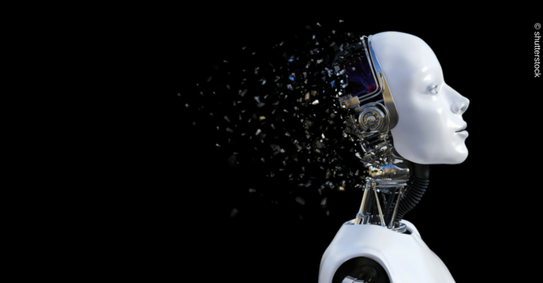

Artificial Intelligence Problems
Links

There is no doubt that the field of artificial intelligence has great benefits that serve humanity and can be used to greatly facilitate life, but it has its negatives and many problems that cannot be overlooked.
The problems of artificial intelligence are represented in the following points:
No place for emotions: All human concepts of conscience, compassion, and the collective spirit will be gone, meaning that machines can perform many tasks without having ties with humans, so that artificial intelligence cannot replace human relationships.
Unemployment: A person cannot compete with a machine in terms of efficiency, and therefore machines will replace humans in various practical fields, which will increase the unemployment rate.
High cost: Working in this field requires a lot of money, whether in the processes of manufacturing machines, programming and repairing them.
Data loss: Despite the huge memory that such machines may have, but there will be no connection between this information when storing and retrieval as humans do, and some damage to the machine can lead to the loss of all data stored on it.
Monotony: These machines cannot go out of the ordinary and create something new as humans do, so their uses in the scientific and technical fields remain without benefit in the fields of arts.
Wrong use: Like many inventions invented by scientists for important purposes, but when they fell into the wrong hands, they were exploited for wars, and the exploitation of artificial intelligence for non-scientific purposes that do not serve society constitutes a real threat.
Despite the problems of artificial intelligence, it represents the future, provided that it is used correctly and to serve society only, and a balance is made between the work of machines and the work of humans in order to reach the maximum benefit.